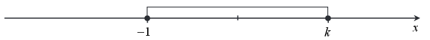
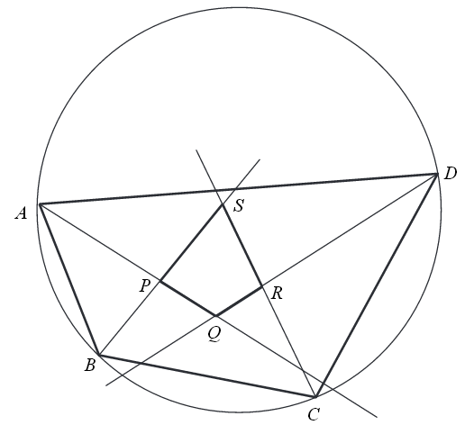

Matura 2015 maj PR
Na rysunku przedstawiony jest zbiór wszystkich liczb rzeczywistych spełniających
nierówność \(|2x-8|\le 10\).  Wynika
stąd, że
A.\( k=2 \)
B.\( k=4 \)
C.\( k=5 \)
D.\( k=9 \)
D
Dana jest funkcja \(f\) określona wzorem \(f(x)=\begin{cases} x-2\quad \text{dla }
x\le 0 \\ \Bigl ||x+3|-4 \Bigl |\quad \text{dla } x\gt 0 \end{cases} \). Równanie \(f(x)=1\) ma
dokładnie
A.jedno rozwiązanie
B.dwa rozwiązania
C.cztery rozwiązania
D.pięć rozwiązań
A
Liczba \((3-2\sqrt{3})^3\) jest równa
A.\( 27-24\sqrt{3} \)
B.\( 27-30\sqrt{3} \)
C.\( 135-78\sqrt{3} \)
D.\( 135-30\sqrt{3} \)
C
Równanie \(2\sin x+3\cos x=6\) w przedziale \((0,2\pi )\)
A.nie ma rozwiązań rzeczywistych.
B.ma dokładnie jedno rozwiązanie rzeczywiste.
C.ma dokładnie dwa rozwiązania rzeczywiste.
D.ma więcej niż dwa rozwiązania rzeczywiste.
A
Odległość początku układu współrzędnych od prostej o równaniu \(y=2x+4\) jest równa
A.\( \frac{\sqrt{5}}{5} \)
B.\( \frac{4\sqrt{5}}{5} \)
C.\( \frac{4}{5} \)
D.\( 4 \)
B
Oblicz granicę \(\lim_{n \to \infty} \left (
\frac{11n^3+6n+5}{6n^3+1}-\frac{2n^2+2n+1}{5n^2-4} \right )\). W poniższe kratki wpisz kolejno cyfrę
jedności i pierwsze dwie cyfry po przecinku rozwinięcia dziesiętnego otrzymanego wyniku.
\(1{,}433333...\)
Liczby \((-1)\) i \(3\) są miejscami zerowymi funkcji kwadratowej \(f\). Oblicz
\(\frac{f(6)}{f(12)}\).
\(\frac{7}{39}\)
Udowodnij, że dla każdej liczby rzeczywistej \(x\) prawdziwa jest nierówność
\[x^4-x^2-2x+3\gt 0\]
Dwusieczne czworokąta \(ABCD\) wpisanego w okrąg przecinają się w czterech różnych
punktach: \(P\), \(Q\), \(R\), \(S\) (zobacz rysunek).  Wykaż, że na czworokącie \(PQRS\) można opisać okrąg.
Długości boków czworokąta \(ABCD\) są równe: \(|AB|=2, |BC|=3, |CD|=4, |DA|=5\). Na
czworokącie \(ABCD\) opisano okrąg. Oblicz długość przekątnej \(AC\) tego czworokąta.
\(|AC|=\sqrt{\frac{253}{13}}\)
W pierwszej urnie umieszczono \(3\) kule białe i \(5\) kul czarnych, a w drugiej
urnie \(7\) kul białych i \(2\) kule czarne. Losujemy jedną kulę z pierwszej urny, przekładamy ją do
urny drugiej i dodatkowo dokładamy do urny drugiej jeszcze dwie kule tego samego koloru, co
wylosowana kula. Następnie losujemy dwie kule z urny drugiej. Oblicz prawdopodobieństwo zdarzenia
polegającego na tym, że obie kule wylosowane z drugiej urny będą białe.
\(\frac{5}{11}\)
Funkcja \(f\) określona jest wzorem \(f(x)=x^3-2x^2+1\) dla każdej liczby
rzeczywistej \(x\). Wyznacz równania tych stycznych do wykresu funkcji \(f\), które są równoległe do
prostej o równaniu \(y=4x\).
\(y=4x-7\) oraz \(y=4x+\frac{67}{27}\)
Dany jest trójmian kwadratowy \(f(x)=(m+1)x^2+2(m-2)x-m+4\). Wyznacz wszystkie
wartości parametru \(m\), dla których trójmian \(f\) ma dwa różne pierwiastki rzeczywiste \(x_1\),
\(x_2\), spełniające warunek \({x_1}^2-{x_2}^2={x_1}^4-{x_2}^4\).
\(m=\frac{12+\sqrt{109}}{5}\)
Podstawą ostrosłupa \(ABCDS\) jest kwadrat \(ABCD\). Krawędź boczna \(SD\) jest
wysokością ostrosłupa, a jej długość jest dwa razy większa od długości krawędzi podstawy. Oblicz
sinus kąta między ścianami bocznymi \(ABS\) i \(CBS\) tego ostrosłupa.
\(\sin \alpha =\frac{2\sqrt{6}}{5}\)
Suma wszystkich czterech współczynników wielomianu \(W(x)=x^3+ax^2+bx+c\) jest
równa \(0\). Trzy pierwiastki tego wielomianu tworzą ciąg arytmetyczny o różnicy równej \(3\).
Oblicz współczynnik \(a\), \(b\) i \(c\). Rozważ wszystkie możliwe przypadki.
\(\begin{cases} a=-3 \\ b=-6 \\ c=8 \end{cases} \) lub \(\begin{cases}
a=-12 \\ b=39 \\ c=-28 \end{cases} \) lub \(\begin{cases} a=-6 \\ b=3 \\ c=-10 \end{cases} \)
Rozpatrujemy wszystkie stożki, których przekrojem osiowym jest trójkąt o obwodzie
\(20\). Oblicz wysokość i promień podstawy tego stożka, którego objętość jest największa. Oblicz
objętość tego stożka.
\(V=\frac{32\pi \sqrt{5}}{3}\)